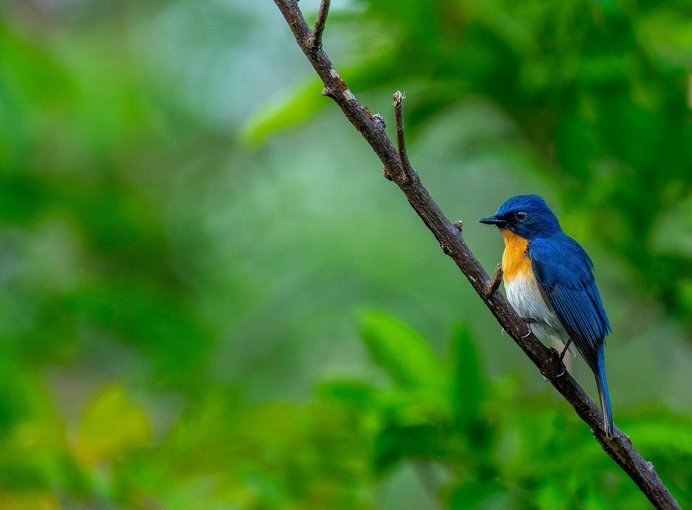
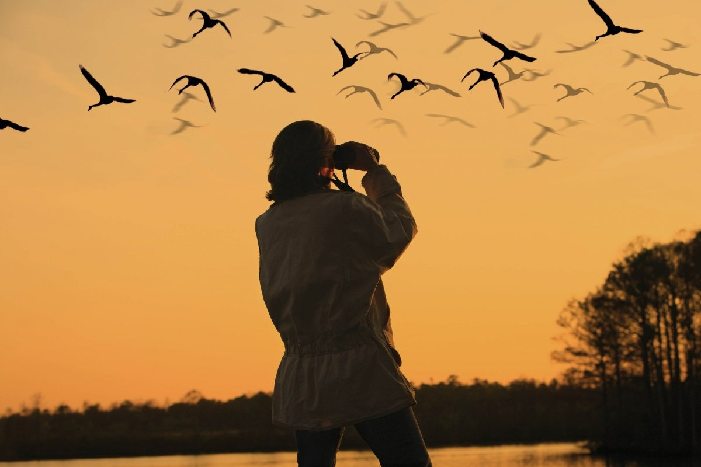

Birdwatching: A Peaceful Hobby
Introduction
Introduction
Birdwatching, also known as birding, is a peaceful and rewarding hobby that allows people to connect with nature while observing the fascinating behaviors of birds. Whether in a local park, a dense forest, or even from the comfort of a backyard, birdwatching encourages patience, curiosity, and a sense of wonder. It is a hobby that requires minimal equipment yet offers endless opportunities to appreciate the beauty of wildlife.
The Joy of Observing Birds in Their Natural Habitat
One of the greatest pleasures of birdwatching is witnessing birds in their natural environment. From the graceful flight of an eagle to the cheerful chirping of a sparrow, every moment spent observing birds provides a deeper appreciation for nature. Birdwatchers often develop a keen eye for details, such as unique feather patterns, distinctive calls, and seasonal behaviors, making each bird sighting an exciting experience.
The Mental and Emotional Benefits of Birdwatching
Birdwatching is more than just a hobby—it is a form of therapy for many. The act of quietly observing birds promotes mindfulness and relaxation, reducing stress and anxiety. Studies have shown that spending time in nature can improve mental well-being, and birdwatching, in particular, fosters a sense of peace and happiness. The rhythmic songs of birds and the serene atmosphere of nature help create a calming experience that soothes the mind.
Birdwatching as a Learning Experience
Every birdwatching session is an opportunity to learn something new. Enthusiasts develop knowledge about different bird species, their migratory patterns, and their role in the ecosystem. Birdwatching also encourages an appreciation for conservation efforts, as many bird populations face challenges due to habitat loss and climate change. Learning to identify and protect these species adds depth and purpose to the hobby.
The Simplicity and Accessibility of Birdwatching
Unlike many outdoor activities that require extensive gear or physical effort, birdwatching is accessible to people of all ages and abilities. A pair of binoculars and a field guide are often enough to get started. Even without specialized equipment, simply listening to bird calls and observing birds in everyday surroundings can be incredibly fulfilling. Whether in a bustling city or a remote countryside, birds are always nearby, making this hobby easy to enjoy anywhere.
Conclusion
Birdwatching is a peaceful, educational, and deeply rewarding hobby that connects people with the natural world. It encourages patience, fosters relaxation, and enhances one’s appreciation for wildlife. Whether enjoyed alone or shared with fellow bird enthusiasts, the simple act of watching birds can bring joy and tranquility to daily life. In a fast-paced world, birdwatching offers a moment of stillness, reminding us to slow down and appreciate the beauty that surrounds us.
I hope you enjoyed reading this blog about the beauty of nature. Remember to take a moment to step outside and immerse yourself in the wonders that surround us.
<